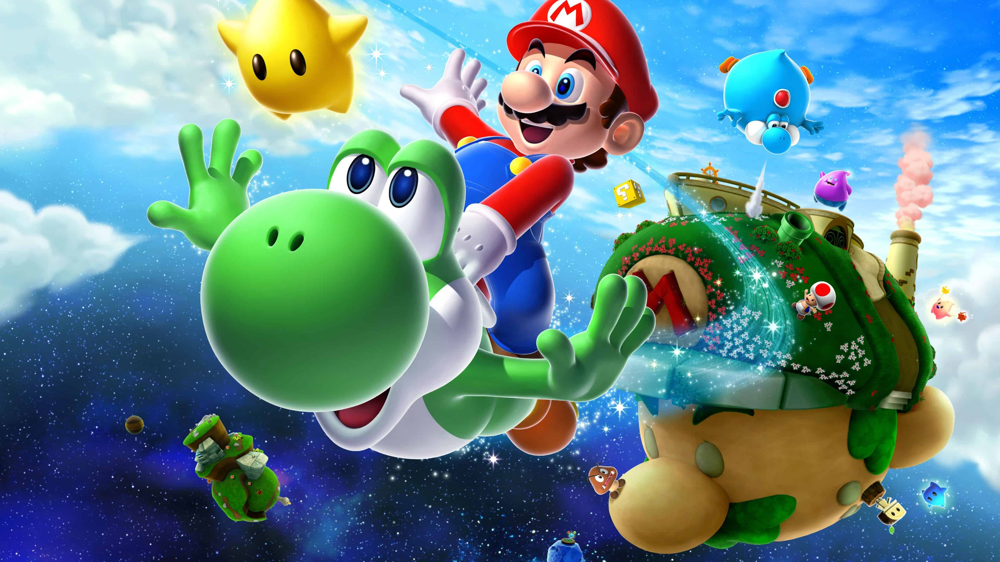

Super Mario World
Mario
Super Mario é uma série de jogos eletrônicos de plataforma, criada pela Nintendo, baseada e estrelada pelo encanador fictício Mario. Alternativamente chamada de série Super Mario Bros. ou simplesmente série Mario, é a série central da ampla franquia Mario.
Luigi
 Luigi é um personagem fictício de videogames produzido pela Nintendo. Criado pelo designer de jogos Shigeru Miyamoto, Luigi é irmão do Mario e é um dos mascotes da série, ele é o seu companheiro em vários jogos.
Luigi é um personagem fictício de videogames produzido pela Nintendo. Criado pelo designer de jogos Shigeru Miyamoto, Luigi é irmão do Mario e é um dos mascotes da série, ele é o seu companheiro em vários jogos.
Princesa Peach
A Princesa Peach Cogumelo é uma personagem fictícia da série de videogames Super Mario Bros., produzido pela Nintendo. Ela é a princesa do também fictício Reino dos Cogumelos e por diversas vezes faz o papel de donzela em apuros da série, sendo constantemente salva por Mario, a quem ela é apaixonada.